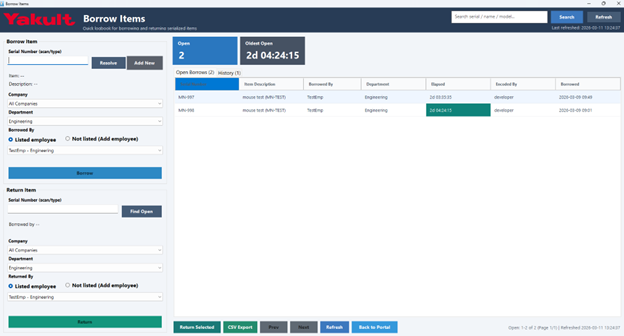

What is Borrow Items?
Borrow Items is the YIMS desktop module used to log borrowed and returned serialized assets. It records who borrowed the item, which department they belong to, who encoded the transaction, and when the item was borrowed or returned.

Borrow Logging
Log borrowed items by serial number.
Return Logging
Close open borrow records when items are returned.
Open Borrows
Track items that are still out.
History
Review completed borrow and return activity.